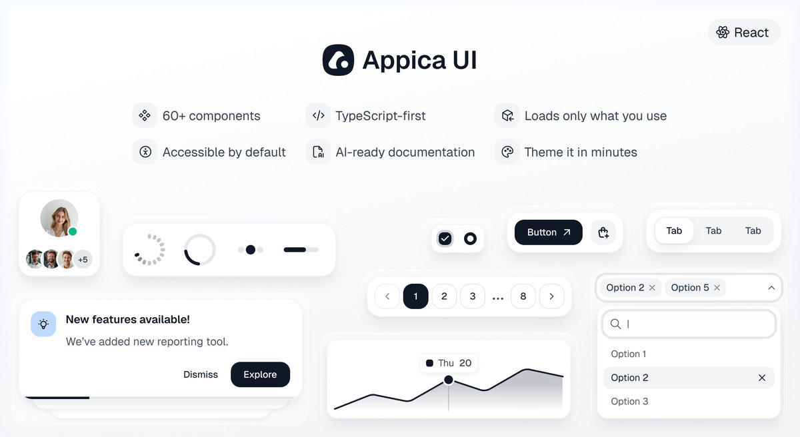

@Appica_dev I just asked my agent to switch to Appica. It's cool, but the agent struggles to grasp the design, combine native components with Appica, and write CSS—often ending up with our own AI slop. It turns out the LLM docs aren't nearly as good for the agent as the human version.

Appica
@Appica_dev
React UI without the maintenance headaches: 60+ polished components as a real npm package — accessible, themeable, TypeScript-strict, AI-agent ready.